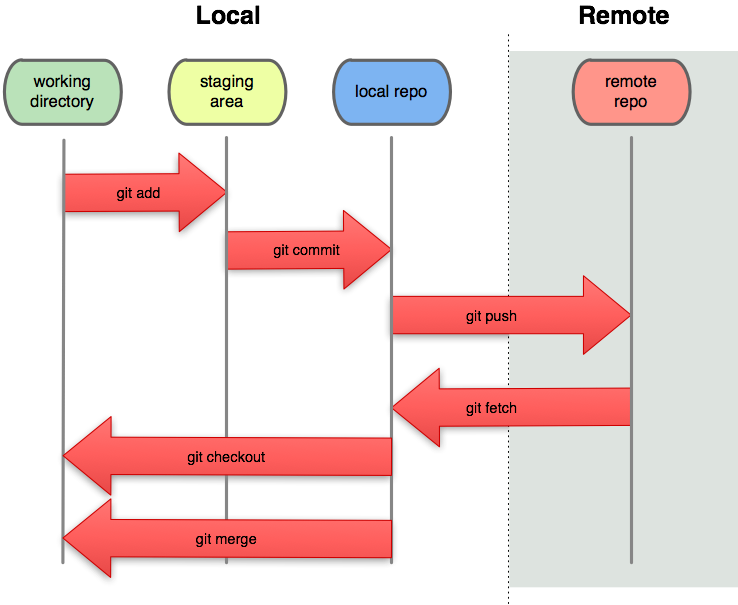
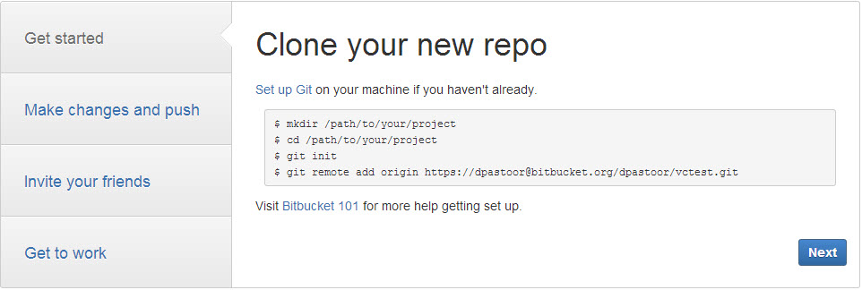
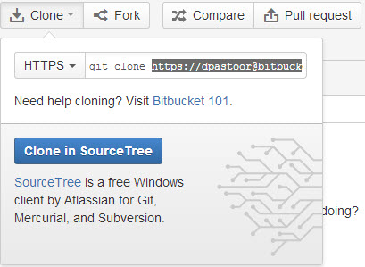
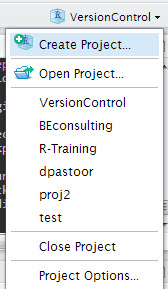
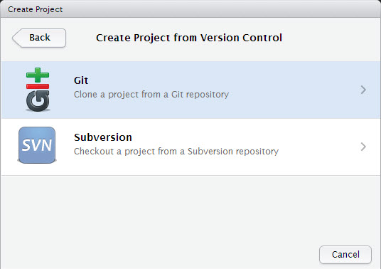
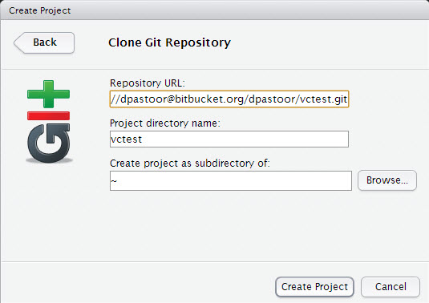
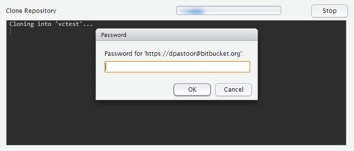
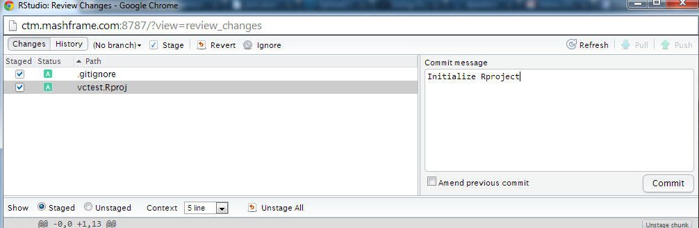
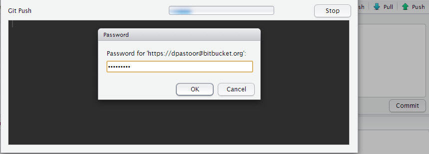
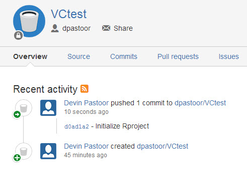

Outline
- Overview of Version Control
- Basics of Git
- Establishing 'Best Practices'
Devin Pastoor


committed
Likewise, there are 3 main sections to any git project:
working directory
staging area
git directory (repository)
modify files in working directory
Stage a file (add a snapshot to staging area)
Commit the staged snapshot to the git directory
(optional): push changes to remote repository

git config --global user.name "<your name>"
git config --global user.email <emailaddress>
ex:
git config --global user.name "Devin Pastoor"
git config --global user.email devin.pastoor@umaryland.edu
You can check your settings easily by trying
git config --list
Or a specific key value is by doing
git config <key>
ie:
git config user.name
You can get help by typing:
git help <verb>
for example, to get help about the config command:
git help config
For our purposes, the easiest way to manage a new repository is to initialize an empty repository on bitbucket/github and use that as a blank slate to start your project.
Click on the 'Create' button in the top left

(optionally) can set settings for issue tracking, wiki, and language

You can easily follow the bitbucket guide to set up your repository from scratch

But we're going to do it from R-studio 1. Click on the 'Clone' button while in the repository on bitbucket.






Let's add the Rproject file to the repository 1. Go to the 'Git' tab on your workspace tab in Rstudio and click 'Commit' 2. Check anything that you'd like to stage (in this case everything) and type a commit message

The local repository has now been updated! But we want to push that change to the remote repository 3. Choose 'Push' and type in your BB pasword when prompted

We can now go back to bitbucket and see that it has been successfully updated
